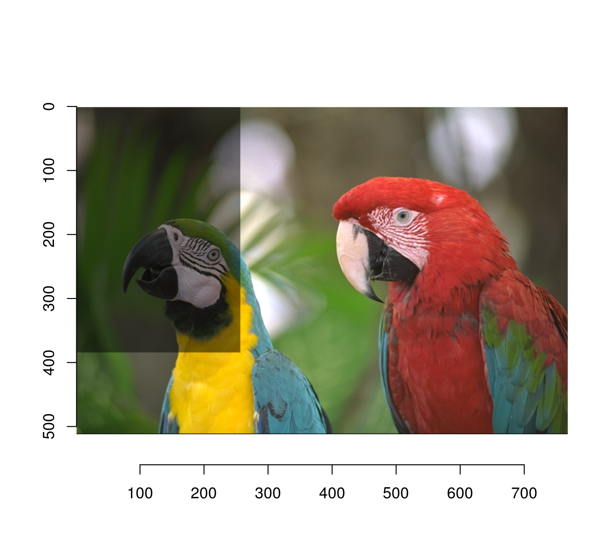
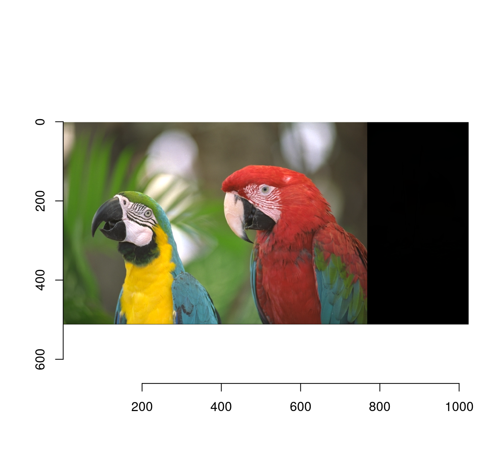
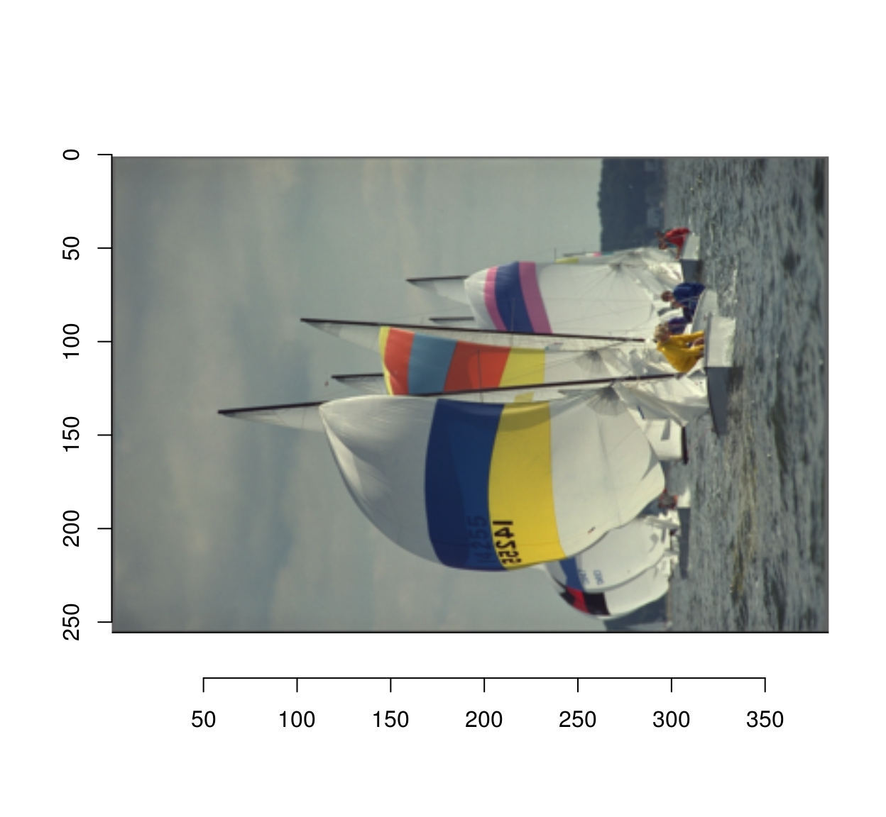

Simon Barthelmé (GIPSA-lab, CNRS)
If you’re on OS X, you’re probably missing XQuartz: https://www.xquartz.org/. Otherwise, you’re probably attempting to compile from source. If you’re installing from github, try installing from CRAN (install.packages(‘imager’)). If CRAN can’t find binaries for your platform:
imager by itself can only load images in png, jpeg and bmp format. Install ImageMagick for more. If you want to load videos, install ffmpeg.
imager doesn’t do out-of-memory processing, meaning the whole video gets loaded. Videos take up huge amounts of memory. If you really want to muck around with large videos, try the experimental package imagerstreams, which supports out-of-memory processing.
Try iminfo (needs imagemagick).
For overlaying, see imdraw:
load.example("parrots") %>% imdraw(boats/255,opacity=.5) %>% plot
For stacking, use imappend:
a <- load.example("parrots")
b <- boats/255
list(a,b) %>% imappend("x") %>% plot
For more flexibility, you can also pad the image and use imdraw.
Use permute_axes:
permute_axes(boats,"yxzc") %>% plot